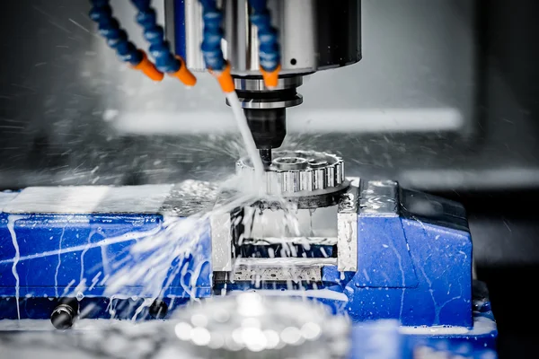
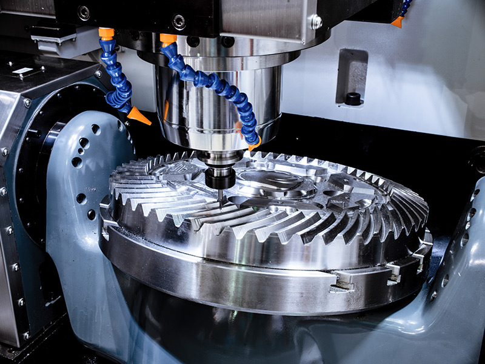
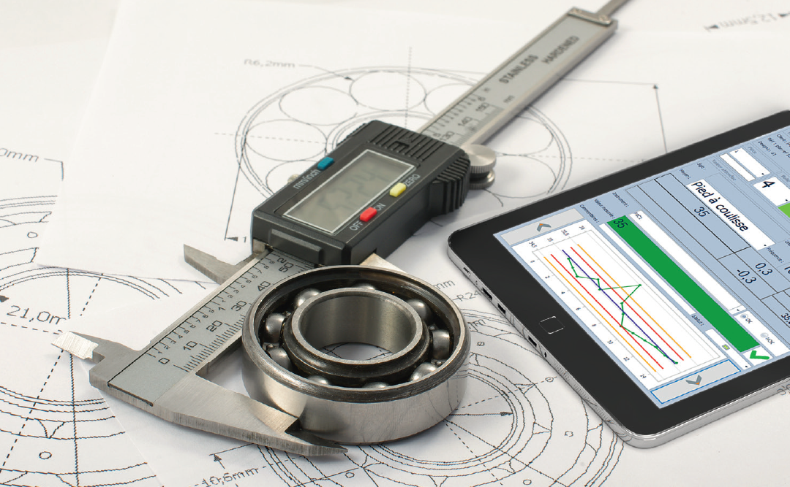

Qu'est-ce que le Fraisage CNC ?
Le fraisage CNC (Commande Numérique par Ordinateur) est un procédé d'usinage automatisé utilisant des machines-outils commandées par ordinateur. Cette méthode permet de produire des pièces complexes avec une grande précision et une répétabilité élevée.
Ce procédé est couramment utilisé pour des productions en série, des pièces techniques complexes, et dans des environnements nécessitant une haute précision.
Composants et Fonctionnalités d'une Fraiseuse CNC
-

- Table de travail : Support pour fixer la pièce, avec des axes motorisés pour le déplacement.
- Broche : Rotation rapide de l'outil pour effectuer l'usinage.
- Commandes numériques : Interface permettant de programmer les mouvements et opérations.
- Système de lubrification : Essentiel pour prolonger la durée de vie des outils et garantir une finition de qualité.
- Capteurs de position : Permettent une rétroaction précise pour maintenir les tolérances dimensionnelles.
- Changeur d'outils automatique : Optimise le temps en permettant de passer d'un outil à l'autre sans intervention manuelle.
- Système de refroidissement : Indispensable pour éviter la surchauffe des outils et des pièces.
- Contrôle de la vibration : Ensemble permettant de surveiller et de réduire les vibrations pendant l'usinage (silentblocs, rigidité).
- Logiciel FAO (Fabrication Assistée par Ordinateur) : Permet de créer des parcours d’outils optimisés pour chaque opération.
Techniques et Méthodes d'Usinage CNC
1. Fraisage 3 axes
Les trois axes linéaires (X, Y, Z) permettent d'usiner des pièces planes ou légèrement complexes. Cette méthode est idéale pour des pièces géométriquement simples.
2. Fraisage 4 axes
Un axe de rotation supplémentaire (généralement autour de l'axe X ou Y) permet d'usiner les surfaces cylindriques ou d'accéder à des zones plus complexes.
3. Fraisage 5 axes
Deux axes de rotation supplémentaires permettent d'usiner des pièces très complexes en une seule configuration. Cette méthode est utilisée dans l'aérospatial, l'automobile et les implants médicaux.
4. Fraisage haute vitesse (HSM)
Utilisation de vitesses de broche très élevées pour des opérations de finition ultra-précises et des taux d'enlèvement de matière optimisés.
5. Fraisage trochoïdal
Technique d'usinage qui optimise le contact entre l'outil et la matière pour réduire les contraintes thermiques et mécaniques. Idéal pour des matériaux difficiles à usiner. Le terme trochoïdal fait référence à un type de mouvement ou de trajectoire basé sur une courbe trochoïdale, qui est une courbe tracée par un point attaché à un cercle qui roule le long d'une autre courbe.
6. Usinage adaptatif
Méthode utilisant des parcours d’outils dynamiques pour maintenir une charge constante sur l’outil, augmentant ainsi la productivité et la durée de vie de l’outil.
Paramètres Cruciaux en Fraisage CNC
Vitesse de broche
Elle est calculée en fonction du matériau, de l'outil et du diamètre de la fraise :
n = (Vc * 1000) / (π * D),
où Vc est la vitesse de coupe et D le diamètre de l'outil.
Avance par dent
Indique la quantité de matière enlevée par dent de fraise à chaque rotation. Une avance excessive peut générer des vibrations ou un mauvais état de surface.
Profondeur de coupe
Optimisez la profondeur axiale (ap) et radiale (ae) en fonction de la rigidité de la machine et de la pièce à usiner.
Stratégie d'usinage
Les parcours optimisés, comme le trochoïdal, réduisent l'usure des outils et augmentent la productivité.
Fréquence de vibration
Surveillez les vibrations de la machine et ajustez les paramètres pour éviter les résonances, qui peuvent réduire la qualité de l’usinage.
Qu'est-ce que le Fraisage CNC ?
Le fraisage CNC (Commande Numérique par Ordinateur) est un procédé d'usinage automatisé utilisant des machines-outils commandées par ordinateur. Cette méthode permet de produire des pièces complexes avec une grande précision et une répétabilité élevée.
Composants et Fonctionnalités d'une Fraiseuse CNC
- Table de travail : Support pour fixer la pièce, avec des axes motorisés.
- Broche : Rotation rapide de l'outil pour l'usinage.
- Changeur d'outils automatique : Change les outils sans intervention.
- Système de lubrification : Prolonge la durée de vie des outils.
Types de Mandrins
Les mandrins permettent de maintenir des pièces en place lors des opérations de tournage :
- Mandrin à Mors Indépendants : Réglage individuel de chaque mors.
- Mandrin à 3 Mors : Auto-centrant, rapide et précis.
- Mandrin à 4 Mors : Idéal pour les pièces asymétriques.
- Mandrin à 6 Mors : Répartition uniforme des forces pour des pièces fragiles.
Types de Mors
Les mors se déclinent en plusieurs types selon l'usage :
- Mors Doux : Fabriqués en acier non traité, adaptables.
- Mors Durs : En acier trempé, parfaits pour des pièces standardisées.
- Mors Réversibles : Adaptables à plusieurs tailles de pièces.
- Mors Spéciaux : Conçus pour des formes complexes.
Contrôle Qualité et Métrologie
Instruments Utilisés
- Pied à coulisse : Mesures extérieures, intérieures et profondeurs.
- Micromètre : Haute précision pour les diamètres.
- Comparateur : Vérification de la planéité.
Lecture et Compréhension des Plans Techniques
Pour réaliser des pièces à partir d'un plan, il est essentiel de :
- Lire et interpréter les cotes dimensionnelles et de fonction.
- Comprendre les tolérances géométriques et dimensionnelles.
- Déchiffrer les symboles de rugosité et de finition.
- Suivre les étapes indiquées pour respecter les spécifications techniques.
Contrôle Qualité et Métrologie
Instruments Utilisés
- Pied à coulisse : Pour des mesures précises des dimensions extérieures, intérieures et des profondeurs.
- Micromètre : Idéal pour mesurer des diamètres et des épaisseurs avec une grande précision.
- Comparateur : Utile pour vérifier les déviations et la planéité.
- Rugosimètre : Permet de mesurer la rugosité et la finition des surfaces.
Vérification de la Conformité
Chaque pièce doit être comparée aux tolérances indiquées sur le plan. Les dimensions critiques doivent être mesurées à l'aide d'instruments calibrés pour garantir la conformité.
Adaptation aux Matériaux
Choix du Matériau
- Acier : Utilisé pour sa robustesse, idéal pour les pièces structurelles.
- Inox : Résistant à la corrosion, parfait pour les environnements humides.
- Aluminium : Léger et facile à usiner, utilisé pour les pièces aéronautiques et automobiles.
- Plastiques : Convient pour des applications légères ou isolantes.
Paramètres d'Usinage selon le Matériau
Adaptez la vitesse de coupe, l'avance et la profondeur de passe en fonction du matériau :
- Acier : Vitesse de coupe faible, avance modérée.
- Aluminium : Vitesse de coupe élevée, faible profondeur de passe.
- Inox : Vitesse modérée, lubrification importante.
- Plastiques : Vitesse élevée, attention à la surchauffe.